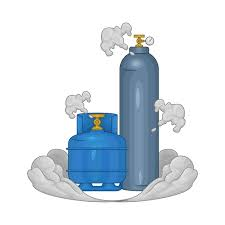
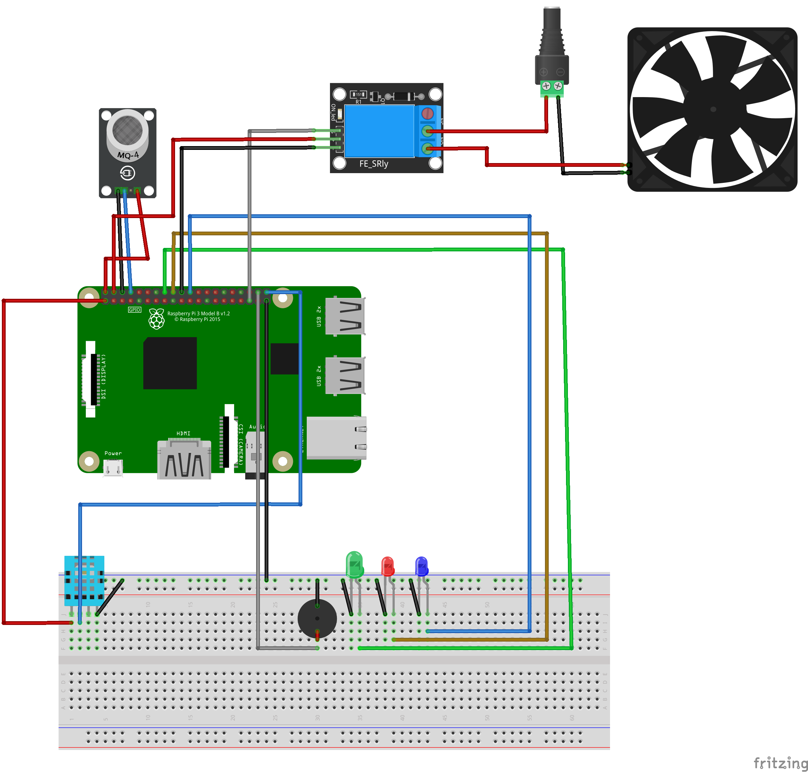
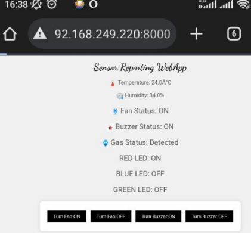
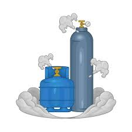
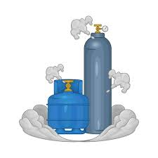

IoT enabled gas detection and temperature monitoring system
About
Gas leaks pose a significant threat to life and property. Traditional methods for gas leak
detection, often reliant on manual inspections, are proving to be inadequate due to factors like
human error and time constraints. This necessitates the exploration of more advanced solutions.
The IoT offers a promising approach for developing intelligent gas leak and temperature
monitoring system for real time monitoring and automated responses to ensure safety and a comfortable environment

Objectives
• Design and develop an IoT-based gas leakage detection & temperature monitoring system.
• Integrate alerting mechanisms for timely notification.
• Enable remote monitoring and control of the system.
Literature Survey
Several research studies have explored the potential of IoT in this domain. A study by Sharma
et al. (2023) proposes an IoT-based system that utilizes gas sensors for leak detection and
transmits data to a cloud platform for real-time monitoring. This approach enables remote
access and facilitates the triggering of automated responses, such as alarm activation and gas
valve shut-off. Similarly, Pandley et al. (2017) investigates the use of MQ-sensor technology
within an IoT framework for gas leak detection and alerting. Their research highlights the
potential for improved security in industrial settings through multi-sensor combinations.
Furthermore, Rachana et al. (2022) emphasizes the role of IoT in not only enhancing safety but
also in streamlining processes like automatic gas booking. This highlights the multifaceted
benefits of IoT integration. Additionally, Sharma et al. (2023) provides a comprehensive review
of various sensor-based and non-sensor-based IoT systems for gas leak detection. This study
underscores the importance of cost-effectiveness, scalability, and continuous improvement in
the development of such systems.
While existing research has laid a strong foundation, there's significant potential for further
development in IoT-based gas leakage and temperature monitoring systems. Future efforts
should focus on refining sensor technology to improve gas detection accuracy and minimize
false alarms. Advanced data analytics can be harnessed for real-time anomaly detection and
even predictive maintenance, identifying potential issues before they escalate. Additionally,
seamless integration with existing building management systems can create a more holistic
approach to safety and efficiency. Finally, establishing standardized protocols and
communication interfaces would enable broader interoperability between different systems,
fostering a more flexible and scalable approach to system design and implementation. By
addressing these future directions, IoT-based gas leakage and temperature monitoring systems
can become even more robust and widely applicable, ultimately creating a safer and more
secure environment.
Design Activity
Device Layer:
✓ Microcontroller Unit: Processes sensor data and controls communication.
✓ Gas Sensors: Detect target gases.
✓ Temperature Sensor: Measures ambient temperature.
✓ Communication Module: Enables data transmission.
✓ Power Supply: Provides stable voltage.
✓ Actuators: Alert system (buzzer, LEDs).
Network Layer:
✓ Communication Protocol: Defines how data is transmitted between devices.
✓ Network Infrastructure: Provides connectivity between devices and the cloud.
Application Layer:
✓ Web App: Provides a user interface for real-time and historical data visualization (gas
detection, temperature) as well as remote control of functionalities.
Schematic

Biblography
Pandey, R. C., Verma, M., & Sahu, L. K. (2017, May). Internet of Things (IOT) Based Gas
Leakage Monitoring and Alerting System with MQ-2 Sensor. From Researchgate:
https://www.researchgate.net/publication/357768388_Internet_of_Things_IOT_Based
_Gas_Leakage_Monitoring_and_Alerting_System_with_MQ-2_Sensor
R, R. S., Reshma, M. R., Lakshmi, S. R., Vaishnavi , P., & Pavithra. (2022, June 6). Survey on
LPG Gas Monitoring System using IoT. From IJCRT: https://www.ijcrt.org/
Sharma, V. P., Dugyala, R., Padmavathi, V., & Gurram, V. R. (2023, June 5). Gas Leakage
Detection System Using IoT And. From esciences: https://www.e3s
conferences.org/articles/e3sconf/abs/2023/28/e3sconf_icmed
icmpc2023_01063/e3sconf_icmed-icmpc2023_01063.html
Achievments

The project yielded several notable findings.Led’s turned on depending on the temperature and if a gas was detected, specifically turning red. The remote-control function, facilitated by the web interface, operated smoothly, enabling effective control of the fan and buzzer. The gas sensor sensor reliably detected gas, promptly triggering the fan and LED as programmed and the temperature monitored temperatures. Overall, the system demonstrated reliable operation across all functions. The integration of hardware and software components was seamless, with minimal delays and precise performance, indicating a successful implementation of a gas detection and temperature monitoring system with real time data being observed on a web app.
Conclusion
An IoT enabled gas detection and temperature monitoring system was successfully developed
and designed that offered alerting mechanisms and enabled remote real time monitoring of gas
detection and fluctuating temperatures. Looking ahead, advancements in sensor technology,
machine learning, and integration capabilities promise even greater functionalities. These
improvements can lead to predictive maintenance, self-healing systems, and seamless
integration with building management systems, creating a more intelligent and responsive
environment.
IoT-enabled gas detection and temperature systems are valuable tools for various
applications, from industrial settings to residential environments. As technology continues to
evolve, these systems will become even more sophisticated, offering unparalleled levels of
safety, efficiency, and peace of mind.
 
